Mapa e ecrã final
Duas escolhas: o estilo do mapa (feito em código, já funciona no site) e a forma do ecrã final com as seis casas (ideias do Higgsfield em qualidade baixa; a escolhida é depois feita em código).
1 · Estilo do mapa
As capturas são da viagem Aido Santo → Algarve, descida depressa e sem esperar pelo carregamento. Todos os estilos têm agora a terra da Península desenhada logo à entrada (38 KB), por isso a meio da viagem a costa nunca desaparece. Os quatro novos desenham menos camadas (sem bosques, sem contorno nas estradas, poucos nomes), e por isso chegam ao Algarve já com estradas e rios, enquanto o atual ainda está vazio. Clica em “Experimentar” para ver no site.
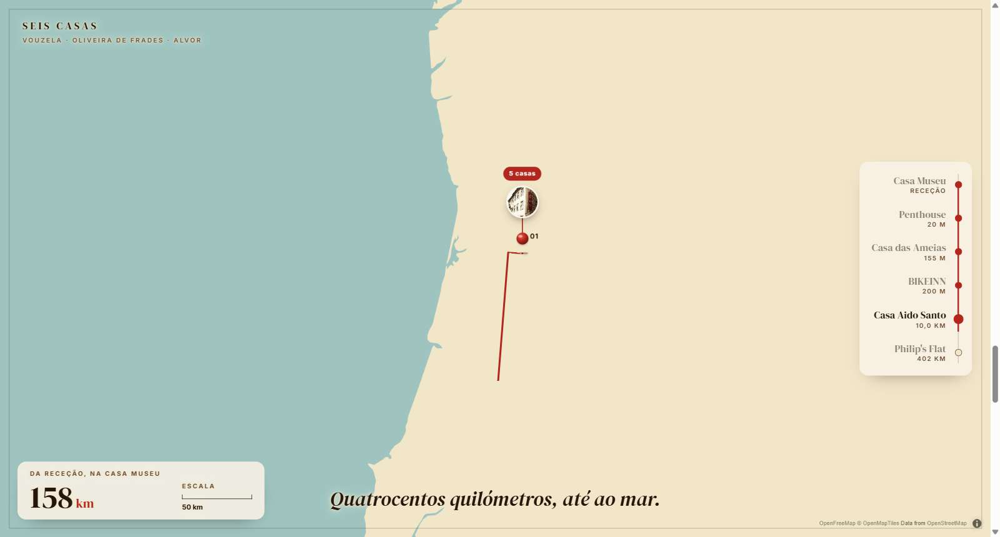
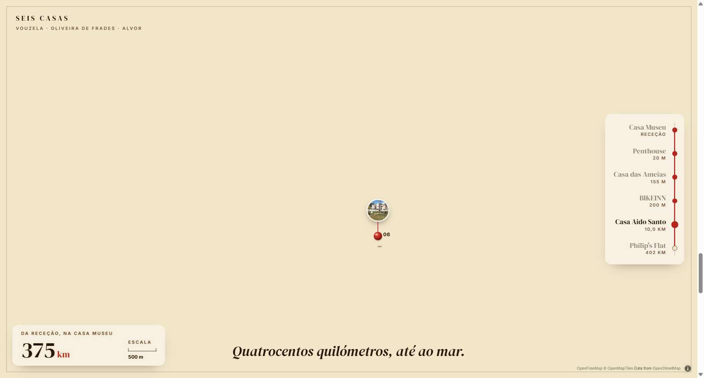
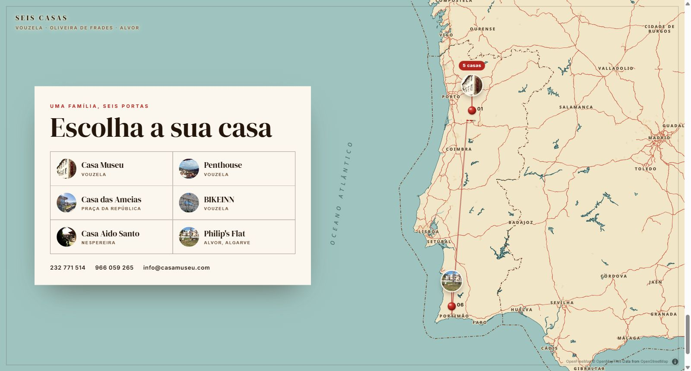
Tinta
Mono: terra branca, estradas a carvão, mar azul-tinta muito escuro. O mais sóbrio e o mais contrastado.
Experimentar →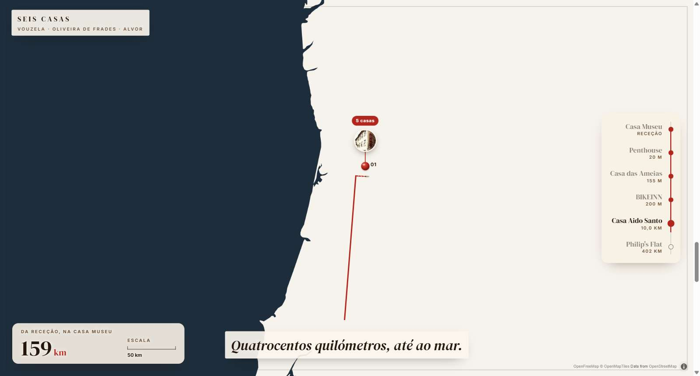
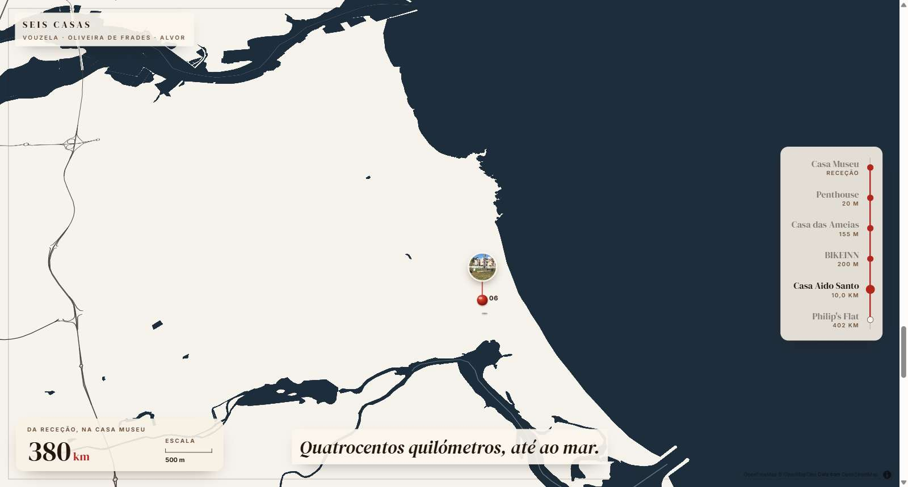
Ardósia
Terra cinza-quente, estradas brancas, mar azul-ardósia. Mais suave que a Tinta.
Experimentar →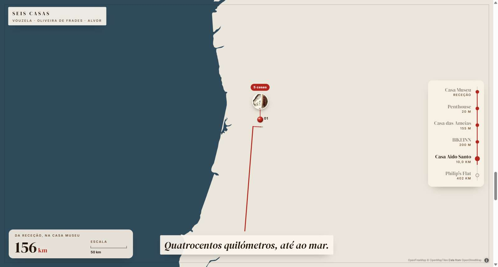
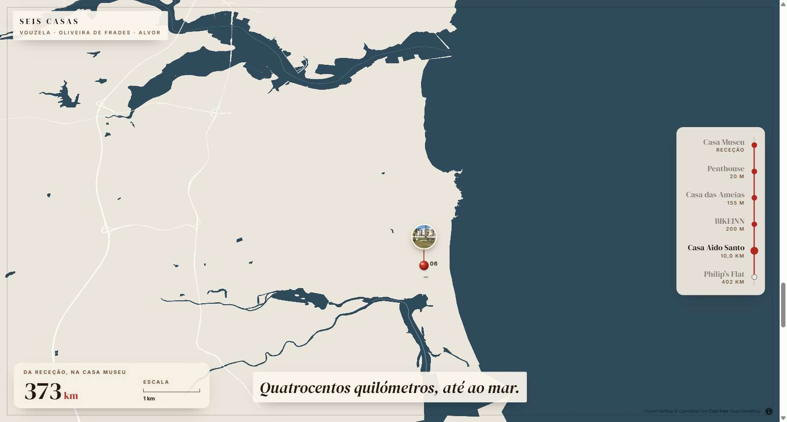
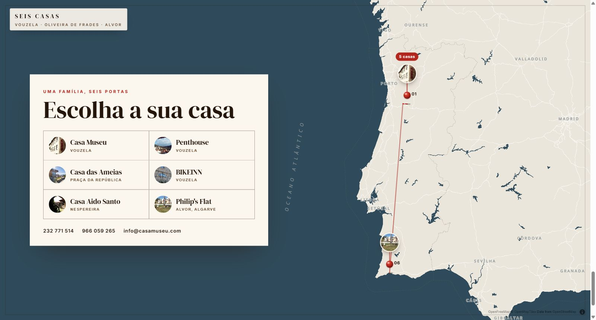
Petróleo
Terra creme (a cor do site), estradas cor de areia, mar azul-petróleo fundo. O que mais combina com os cartões.
Experimentar →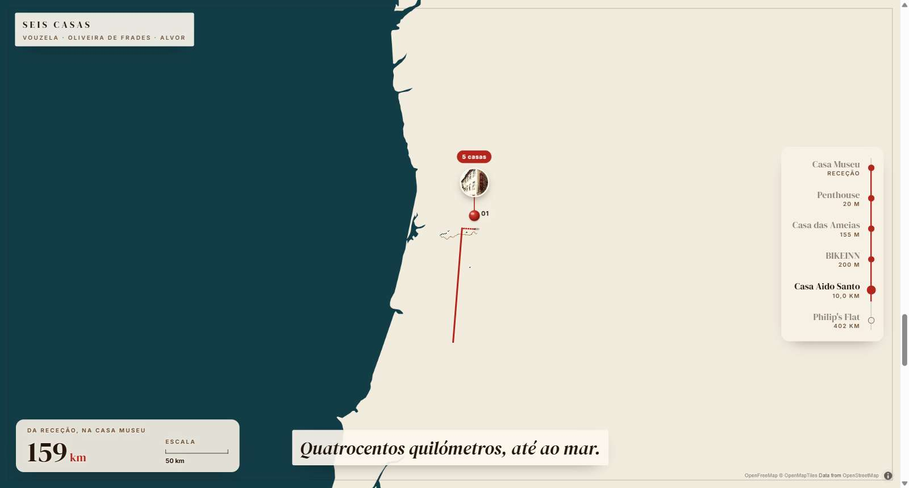
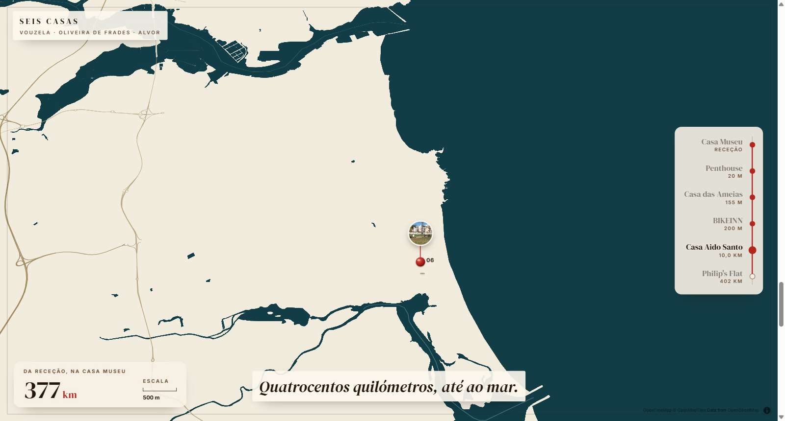
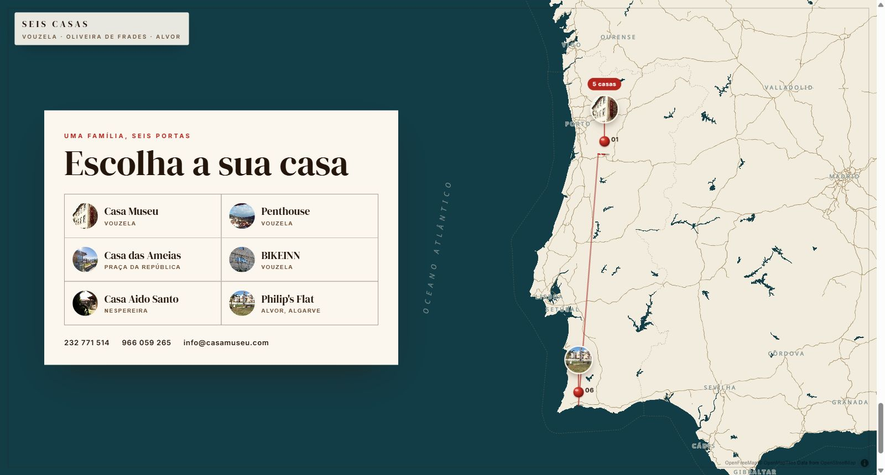
Noite
Terra carvão, mar quase preto, estradas douradas apagadas. Os cartões creme saltam muito à vista.
Experimentar →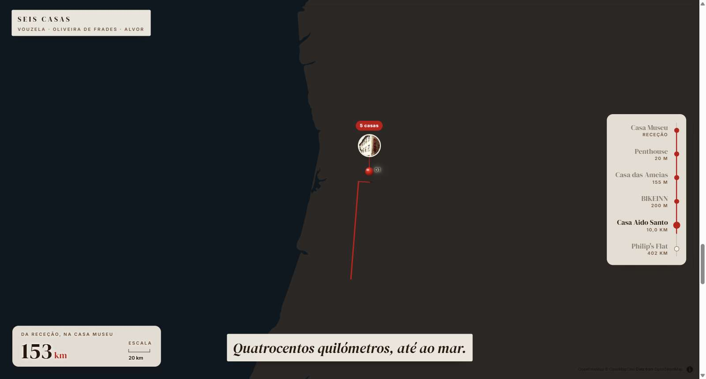
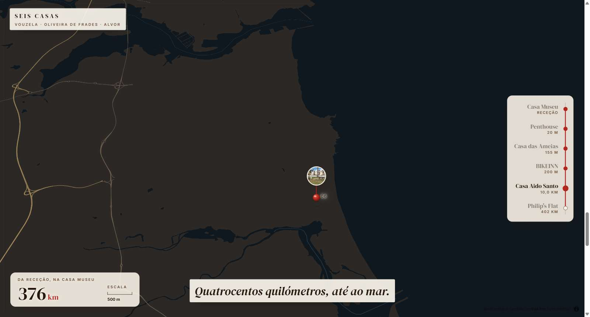
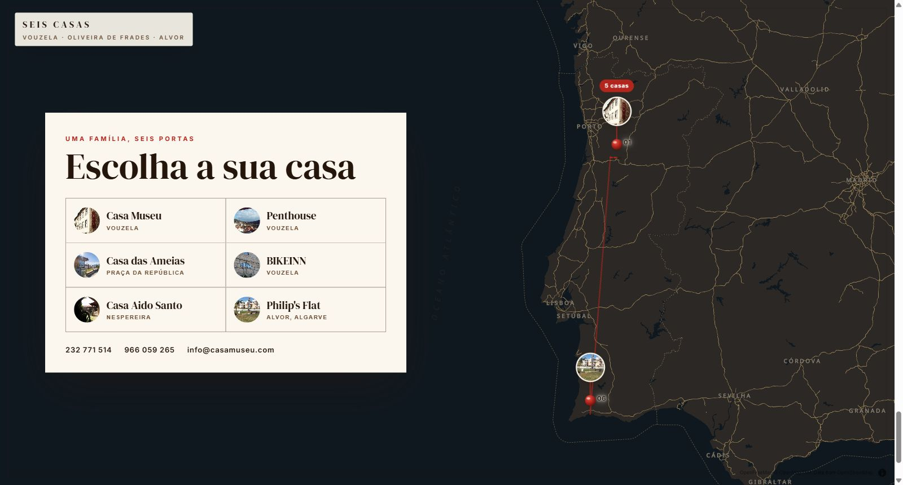
2 · Ecrã final: dez ideias
Todas com as seis casas juntas e as fotos verdadeiras. São esboços rápidos: os textos e alguns pormenores do mapa têm erros da IA (nomes trocados, pioneses fora do sítio). Serve para escolher a direção; pode ser uma mistura de duas.